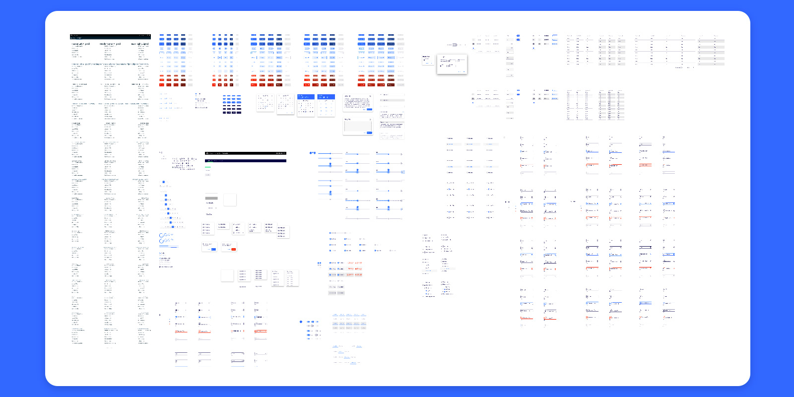
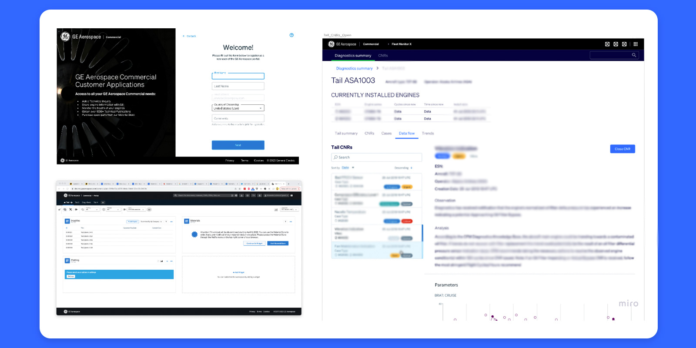
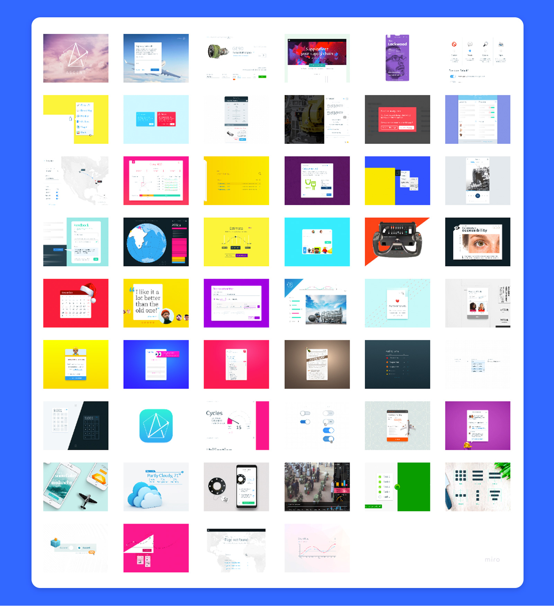

Enterprise Design System for Data-Intensive Applications
TL;DR
For GE Aerospace Services business, Alex led service blueprinting and research to show how billions of dollars in services are forecasted, planned, and actualized across a global network of internal and 3rd party shops. Unlike a shop-centric value stream
approach, this enabled stakeholders to identify opportunities to improve data flow and quality across an enterprise rather than just one product.

Overview
In my role as a UI/UX Designer at GE Aviation, I led the conceptualization, design, and implementation of a robust enterprise design system tailored for customer-facing applications. This comprehensive design system was meticulously crafted to excel in
handling data-dense displays while ensuring seamless responsiveness across various devices, including mobile, large monitors, and laptops. Over time, I stepped back from management of the design system and continued to contribute to it as I continued
to used it and lead projects that used its design and web componentry.

Key Features and Achievements
1. Data-Dense Display Optimization
* Challenge: Our enterprise applications dealt with vast amounts of data, requiring a design system that could present complex information intuitively without compromising usability.
* Solution: I spearheaded the development of a modular grid system and data visualization components that allowed for efficient organization and presentation of dense data sets. Through iterative user testing and feedback loops, we refined the
data presentation to strike the perfect balance between information richness and user comprehension.
2. Cross-Device Responsiveness
* Challenge: The diverse range of devices used by our customers necessitated a design system that seamlessly adapted to various screen sizes and resolutions.
* Solution: Leveraging responsive design principles, I ensured that the design system was not only adaptable but provided an optimal viewing experience on devices ranging from mobile phones to large displays. Media queries, flexible layouts, and
adaptive components were integrated to guarantee a consistent and user-friendly interface across all devices.
3. Mobile-First Approach
* Challenge: Recognizing the increasing prevalence of mobile usage among our customers, a mobile-first strategy was imperative.
* Solution: I championed a mobile-first design approach, prioritizing the mobile experience in the design process. This involved creating touch-friendly interfaces, optimizing performance for slower network conditions, and implementing progressive
enhancement techniques to ensure a seamless transition from mobile to larger screens.
4. Collaboration and Adoption
* Achievement: The successful implementation of the design system was not only a testament to its functionality but also its adoption across the organization.
* Solution: To foster adoption, I conducted comprehensive training sessions for development teams, providing documentation and resources. Regular feedback loops and continuous improvement cycles were established to refine the design system based
on real-world usage and evolving business needs. Continued socialization is managed by a small group of contributors as the system continues to thrive.
Impact
The enterprise design system significantly improved the efficiency of our development teams, reduced time-to-market for new features, and garnered positive feedback from end-users for its intuitive and consistent interface. The project showcased my ability
to bridge the gap between complex technical requirements and user-centric design principles, resulting in a scalable and adaptable design system that continues to evolve with the dynamic needs of our enterprise applications.

Bonus
One thing I found particularly interesting and useful when reimagining a design system meant for such broad use was to step outside of the business context of the design system and see how the system would apply. For two months I participated in a daily
UI challenge, utilizing the design system as my crayon box. The prompts for the challege stretched the design's use cases well beyond what we'd intended, and as a result generated many great conversations and considerations